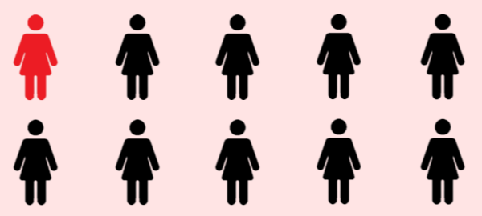
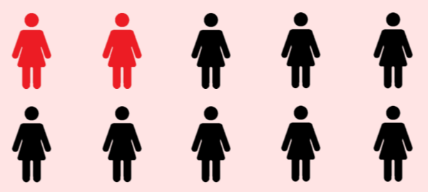
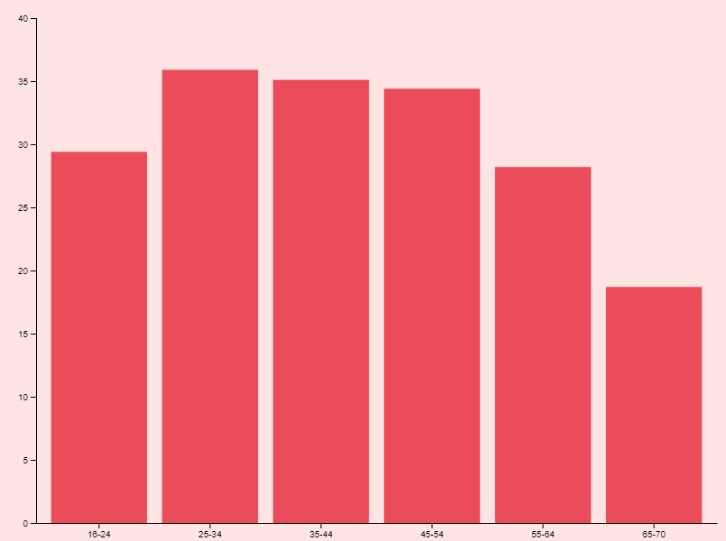

  Ultimamente è molto sentito il tema della violenza sulle donne quindi volevo definire in Italia l’incidenza del fenomeno
Quello che nessuno ha detto è che la violenza sulle donne è un fatto quotidiano, comune, di massa.
Dacia Maraini, La violenza contro le donne, “Paese Sera”, 11.10.1975
La violenza contro le donne viene definita fatto sociale che necessita di interventi mirati in termini di politiche pubbliche solo verso la fine degli anni 70. Saranno infatti i movimenti femministi a trasformare questo fenomeno da privato a pubblico, mettendo in luce la gerarchia sociale e il controllo dell’uomo sulla figura femminile.
Nel 1976 a Bruxelles venne istituito un “tribunale dei crimi commessi contro le donne” con lo scopo di difendere le vittime rendendo a loro giustizia e sensibilizzare la società.
Verso gli anni 80 questo fenomeno viene esaminato anche dalle Nazioni Unite che lo definiranno come “qualsiasi atto di violenza di genere che provoca o possa provocare danni fisici, sessuali o psicologici alle donne, incluse le minacce di tali atti, la coercizione o la privazione arbitraria della libertà sia che si verifichi nella vita pubblica o privata”
In Italia il
31.5%
delle donne ha subito violenza sessuale o fisica nella sua vita Dai dati risulta evidente che la percentuale di donne che hanno subito violenza fisica o sessuale nel corso della loro vita è maggiore nel centro Italia 35.9%; al nord questa è pari al 32.2% mentre al sud 29.6% e nelle isole scende a 25.2%.
La regione con la percentuale più alta è il Lazio 39.2%, mentre la Basilicata con il 23.7% è la regione migliore.
Questi dati sono comunque allarmanti in tutta Italia infatti mediamente 1 donna su 3 ha dovuto subire violenze mostrando un fallimento dell’intera comunità nazionale.
CREDITI sono troppo forte